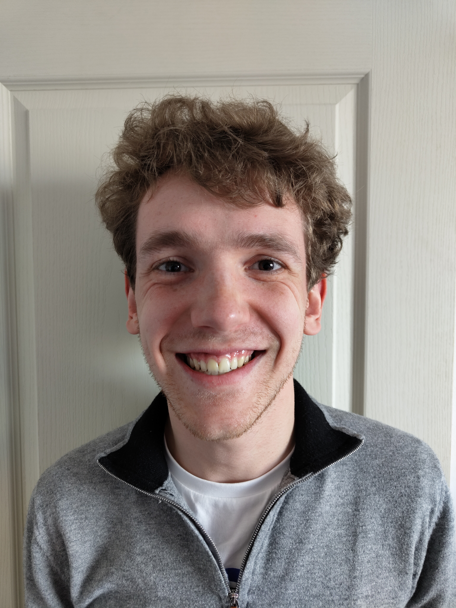

Automatisme Chaîne de Prod.
Programmation d'un automate pour la gestion d'une ligne d'assemblage. Analyse fonctionnelle et Grafcet.
BUT GEII | Electronique et systèmes embarqués

Mon parcours actuel en BUT Génie Électrique et Informatique Industrielle (GEII) est la fondation stratégique de mon projet professionnel. Fort de mes connaissances en automatismes, en électronique de puissance et en systèmes embarqués, mon ambition claire est de devenir Ingénieur.
Je souhaite mettre ces compétences techniques pointues au service d'un acteur majeur de la transition énergétique. Mon objectif ultime est d'intégrer le groupe EDF afin de participer activement aux défis de la production et de la distribution d'énergie.
Mes centres d'intérêt reflètent une affinité pour la performance. L'énergie, qu'elle soit au cœur des systèmes complexes que j'étudie ou un enjeu sociétal, capte mon attention. Cette recherche d'excellence se retrouve dans mon admiration pour la Formule 1 et le Rally, symboles d'ingénierie poussée et de gestion de risques.
Ma pratique du vélo et de la course à pieds exige de l'endurance, tandis que le piano m'apporte la rigueur et le souci du détail nécessaires à la réussite de projets complexes. Ces passions m'animent et me préparent à aborder avec méthode les défis techniques de l'ingénierie.
Programmation d'un automate pour la gestion d'une ligne d'assemblage. Analyse fonctionnelle et Grafcet.

Conception d'un système de régulation thermique. Choix des capteurs et programmation de la boucle de contrôle.
Développement technique complet (mécanique et logiciel) d'un lanceur de balles automatisé.
.jpg)
Conception, soudure et calibration d'un multimètre numérique. Validation des chaînes de mesure (tension, courant).